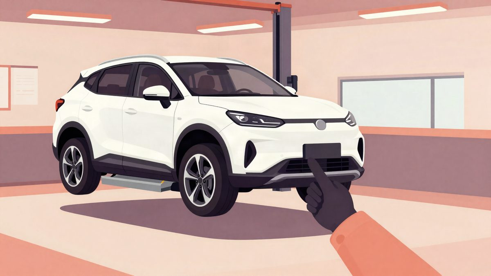

TÜV: Tesla Model Y drugu godinu zaredom posljednji, kod 18,5 posto auta velike ili opasne greške

Prema godišnjem izvješću njemačkog TÜV-a, Tesla Model Y drugu godinu zaredom je posljednja među 109 modela u skupini starosti dvije do tri godine. Velike ili opasne nedostatke imalo je 18,5 posto automobila, a najviše je problema na ovjesu i kočnicama.
Tesla Model Y je i ove godine na dnu TÜV-ove ljestvice pouzdanosti. U godišnjem izvješću njemačkog udruženja zauzeo je posljednje mjesto među 109 modela u skupini vozila starih dvije do tri godine, i to drugu godinu zaredom.
Velike ili opasne nedostatke imalo je 18,5 posto Modela Y koji su išli na prvi redoviti tehnički pregled. Godinu ranije taj je udio bio 17,3 posto, a prosjek za istu dobnu skupinu iznosi 6,4 posto. Gotovo svaki peti Model Y imao je na pregledu nedostatak koji je trebalo otkloniti. TÜV navodi da od izvješća za 2015. nijedan model u toj dobnoj skupini nije imao tako visok udio velikih nedostataka.
Izvješće se temelji na oko 9,7 milijuna pregleda koje su TÜV-ove stanice obavile između 1. srpnja 2025. i 30. lipnja 2026., pa je uzorak velik.
Ovjes i kočnice
Najveći problem je ovjes. Istrošenost nosivih i vodećih zglobova kod Modela Y pronađena je 24 puta češće nego kod modela s kojima ga TÜV uspoređuje.
Kočnice također odskaču. Nedostatke na kočionim diskovima imalo je 3,4 posto Modela Y, a prosjek skupine je 1,0 posto. Veći od prosjeka bio je i udio kvarova na prednjem svjetlosnom sustavu.
Kilometraža kao dio objašnjenja
Modeli Y imali su na pregledu u prosjeku 58.000 km, dok je prosjek usporedivih modela 47.000 km. To je vjerojatno utjecalo na istrošenost dijelova. No izvješće naglašava da se razlika među modelima ne može objasniti samo većom masom električnih vozila ili intenzivnijim korištenjem, a važni su i dizajn vozila i trajnost dijelova.
Izvor: MyDrivers (快科技)